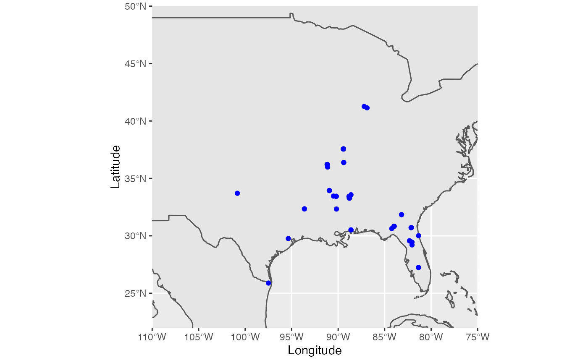
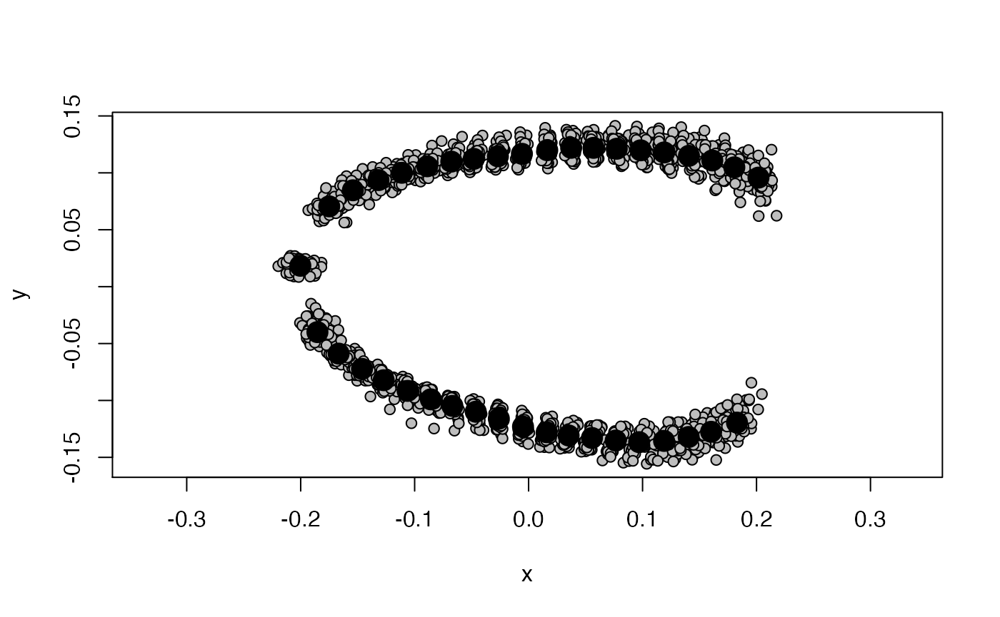

00_package.RmdHowdy! The first thing one should do to utilize this set of functions is install the Rivera package. code seen below
devtools::install_github("joshoriv/rivera.package")Once the package has been installed, please be sure to load the package into your R console.
library(rivera.package)At this point, we can go ahead and load the required packages for this tutorial. Following this we’ll be reading in the siren locality data and siren shape data (landmark coordinates).
## Linking to GEOS 3.8.1, GDAL 3.1.1, PROJ 6.3.1
library(rnaturalearth)
library(rnaturalearthdata)
library(mapdata)## Loading required package: maps## Loading required package: RRPP##
## ── Column specification ────────────────────────────────────────────────────────
## cols(
## Institution = col_character(),
## Collection_Number = col_character(),
## Species = col_character(),
## State = col_character(),
## County = col_character(),
## Locality = col_character(),
## Latitude = col_double(),
## Longitude = col_double(),
## Basin = col_logical(),
## Drainage = col_logical()
## )
file_path <- system.file("extdata", "SirenDorsal.TPS", package = "rivera.package")
sirens_dorsal <- geomorph::readland.tps(file_path, specID = "ID")##
## No curves detected; all points appear to be fixed landmarks.The purpose of this function is to generate a map of siren specimen localities. Specimen distribution maps are helpful in understanding trends in biological phenomena. In order for this function to process, the coordinate information (longitude & latitude) must be available for each specimen. The world map, where the specimen datapoints will be superimposed, will be selected by providing coordinates of interest.
sirens_map <- dplyr::select(sirens, Longitude, Latitude) %>%
na.omit()
world <- ne_countries(scale = "medium", returnclass = "sf")
ggplot(data = world) +
geom_sf() +
geom_point(data = sirens_map, mapping = aes(x = Longitude, y = Latitude), color = "blue") +
coord_sf(xlim = c(-110, -75), ylim = c(22, 50), expand = FALSE)
This function performs a generalized Procrustes analysis/superisposition of multiple specimens about their mean. This function requires the input of specimen landmark coordinates. A plot of superimposed coordinates is returned and their centroid sizes in dataframe formate. This function then plots the Procrustres coordinates. This is a useful analysis for visualizing subtle variation in morphology.
gpa <- gpagen(sirens_dorsal)##
|
| | 0%
|
|============== | 20%
|
|============================ | 40%
|
|========================================== | 60%
|
|======================================================================| 100%
plot(gpa)
This function performs a traditional principal components analysis. The input for this function is the generalized Procrustes analysis proceeding this function. A PCA plot shows clusters of samples based on their similarity. This can be helpful to visualize similarities among geographically isolated taxa, different species, etc.
##
## Ordination type: Principal Component Analysis
## Centering and projection: OLS
## Number of observations 59
## Number of vectors 59
##
## Importance of Components:
## Comp1 Comp2 Comp3 Comp4
## Eigenvalues 0.002332865 0.0004642554 0.0002436751 0.0001466576
## Proportion of Variance 0.638113696 0.1269887816 0.0666529675 0.0401155757
## Cumulative Proportion 0.638113696 0.7651024772 0.8317554447 0.8718710204
## Comp5 Comp6 Comp7 Comp8
## Eigenvalues 0.0001345877 8.747688e-05 5.713995e-05 3.420838e-05
## Proportion of Variance 0.0368140528 2.392774e-02 1.562961e-02 9.357093e-03
## Cumulative Proportion 0.9086850732 9.326128e-01 9.482424e-01 9.575995e-01
## Comp9 Comp10 Comp11 Comp12
## Eigenvalues 2.430754e-05 1.745453e-05 1.544533e-05 1.269061e-05
## Proportion of Variance 6.648895e-03 4.774376e-03 4.224796e-03 3.471289e-03
## Cumulative Proportion 9.642484e-01 9.690228e-01 9.732476e-01 9.767189e-01
## Comp13 Comp14 Comp15 Comp16
## Eigenvalues 1.008904e-05 8.150216e-06 6.940475e-06 6.324554e-06
## Proportion of Variance 2.759678e-03 2.229346e-03 1.898443e-03 1.729969e-03
## Cumulative Proportion 9.794786e-01 9.817079e-01 9.836063e-01 9.853363e-01
## Comp17 Comp18 Comp19 Comp20
## Eigenvalues 4.775669e-06 4.315576e-06 4.140804e-06 3.724775e-06
## Proportion of Variance 1.306299e-03 1.180449e-03 1.132643e-03 1.018846e-03
## Cumulative Proportion 9.866426e-01 9.878231e-01 9.889557e-01 9.899745e-01
## Comp21 Comp22 Comp23 Comp24
## Eigenvalues 3.230267e-06 3.134988e-06 2.687569e-06 2.616163e-06
## Proportion of Variance 8.835820e-04 8.575202e-04 7.351365e-04 7.156046e-04
## Cumulative Proportion 9.908581e-01 9.917157e-01 9.924508e-01 9.931664e-01
## Comp25 Comp26 Comp27 Comp28
## Eigenvalues 2.236653e-06 2.099104e-06 2.020277e-06 1.932910e-06
## Proportion of Variance 6.117965e-04 5.741724e-04 5.526108e-04 5.287130e-04
## Cumulative Proportion 9.937782e-01 9.943524e-01 9.949050e-01 9.954337e-01
## Comp29 Comp30 Comp31 Comp32
## Eigenvalues 1.767961e-06 1.580847e-06 1.453281e-06 1.251949e-06
## Proportion of Variance 4.835942e-04 4.324126e-04 3.975191e-04 3.424484e-04
## Cumulative Proportion 9.959173e-01 9.963497e-01 9.967472e-01 9.970897e-01
## Comp33 Comp34 Comp35 Comp36
## Eigenvalues 1.047252e-06 1.034830e-06 9.406255e-07 8.191554e-07
## Proportion of Variance 2.864572e-04 2.830592e-04 2.572913e-04 2.240653e-04
## Cumulative Proportion 9.973761e-01 9.976592e-01 9.979165e-01 9.981405e-01
## Comp37 Comp38 Comp39 Comp40
## Eigenvalues 7.031245e-07 6.846266e-07 6.452362e-07 5.690109e-07
## Proportion of Variance 1.923272e-04 1.872674e-04 1.764929e-04 1.556428e-04
## Cumulative Proportion 9.983329e-01 9.985201e-01 9.986966e-01 9.988523e-01
## Comp41 Comp42 Comp43 Comp44
## Eigenvalues 5.302803e-07 4.590776e-07 4.357997e-07 4.124571e-07
## Proportion of Variance 1.450487e-04 1.255725e-04 1.192052e-04 1.128203e-04
## Cumulative Proportion 9.989973e-01 9.991229e-01 9.992421e-01 9.993549e-01
## Comp45 Comp46 Comp47 Comp48
## Eigenvalues 3.650360e-07 3.230692e-07 2.945795e-07 2.750804e-07
## Proportion of Variance 9.984908e-05 8.836983e-05 8.057697e-05 7.524334e-05
## Cumulative Proportion 9.994548e-01 9.995431e-01 9.996237e-01 9.996989e-01
## Comp49 Comp50 Comp51 Comp52
## Eigenvalues 1.915042e-07 1.772543e-07 1.566927e-07 1.356360e-07
## Proportion of Variance 5.238255e-05 4.848476e-05 4.286049e-05 3.710082e-05
## Cumulative Proportion 9.997513e-01 9.997998e-01 9.998427e-01 9.998798e-01
## Comp53 Comp54 Comp55 Comp56
## Eigenvalues 1.127269e-07 9.371797e-08 8.328988e-08 6.287199e-08
## Proportion of Variance 3.083443e-05 2.563488e-05 2.278246e-05 1.719751e-05
## Cumulative Proportion 9.999106e-01 9.999362e-01 9.999590e-01 9.999762e-01
## Comp57 Comp58 Comp59
## Eigenvalues 5.805930e-08 2.885446e-08 5.051674e-34
## Proportion of Variance 1.588109e-05 7.892622e-06 1.381795e-31
## Cumulative Proportion 9.999921e-01 1.000000e+00 1.000000e+00
plot(pca, main = "PCA")